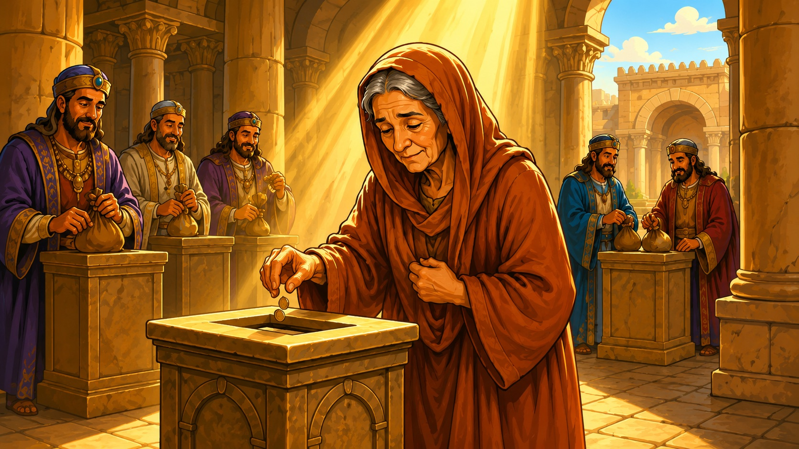

La iglesia y el dinero
Concilios, diezmo obligatorio y competencia por recaudar. Lo que tú viste tiene nombre en la Biblia — y también tiene respuesta. Empezamos por el único concilio que registra la Escritura.
«Porque ha parecido bien al Espíritu Santo, y a nosotros, no imponeros ninguna carga más que estas cosas necesarias.» Hechos 15:28 · Reina-Valera 1960
El concilio que quitó cargas
Algunos llegaron de Judea enseñando algo nuevo: «si no haces esto, no puedes ser salvo». No era un detalle — era poner precio a la gracia. La iglesia no se calló: subió el caso a Jerusalén, a los apóstoles y ancianos.
«Entonces algunos que venían de Judea enseñaban a los hermanos: Si no os circuncidáis conforme al rito de Moisés, no podéis ser salvos.»
Hechos 15:1Y esto es lo que decidió el único concilio de la Biblia. Léelo despacio, porque es la vara con la que se mide todo concilio de hoy:
«Ahora, pues, ¿por qué tentáis a Dios, poniendo sobre la cerviz de los discípulos un yugo que ni nuestros padres ni nosotros hemos podido llevar? Antes creemos que por la gracia del Señor Jesús seremos salvos, de igual modo que ellos.»
Hechos 15:10-11 · Pedro, en el concilio«Así, pues, los que fueron enviados descendieron a Antioquía, y reuniendo a la congregación, entregaron la carta; habiendo leído la cual, se regocijaron por la consolación.»
Hechos 15:30-31El resultado del concilio bíblico no fue miedo, ni cuotas, ni membresías condicionadas: fue gozo. Y las iglesias «eran confirmadas en la fe, y aumentaban en número cada día» (Hechos 16:5).
La vara de Hechos 15
La Biblia no condena que las iglesias se reúnan y acuerden — Hechos 15 existe. Lo que condena es el espíritu contrario: el concilio bíblico quitó un yugo; cualquier sistema que imponga cargas — cuotas obligatorias, salvación por requisitos, lealtad a una sede — opera en dirección opuesta al Espíritu Santo.
Muchas iglesias, una sola Cabeza
En el Nuevo Testamento no existe una sede central que cobre tributo a las congregaciones. Cada iglesia local tenía sus propios ancianos, puestos por el Espíritu, responsables directamente ante Cristo.
«Y constituyeron ancianos en cada iglesia, y habiendo orado con ayunos, los encomendaron al Señor en quien habían creído.»
Hechos 14:23«Y él es la cabeza del cuerpo que es la iglesia, él que es el principio, el primogénito de entre los muertos, para que en todo tenga la preeminencia.»
Colosenses 1:18Y el requisito que la Biblia pone a todo el que supervisa iglesias aparece una y otra vez, como un tambor: «no codicioso de ganancias deshonestas» (1 Timoteo 3:3, Tito 1:7), «no por ganancia deshonesta, sino con ánimo pronto; no como teniendo señorío sobre los que están a vuestro cuidado, sino siendo ejemplos de la grey» (1 Pedro 5:2-3).
Pregunta honesta
Si el Nuevo Testamento muestra iglesias locales con ancianos propios y una sola Cabeza, ¿de dónde sale la pirámide donde las congregaciones compiten por recaudar y rinden cuentas a una sede? De la Biblia, no.
Lo que dice — y lo que le añadieron
Este es el versículo que más se usa para exigir el diezmo. Léelo completo, con su contexto:
«¿Robará el hombre a Dios? Pues vosotros me habéis robado. Y dijisteis: ¿En qué te hemos robado? En vuestros diezmos y ofrendas… Traed todos los diezmos al alfolí y haya alimento en mi casa…»
Malaquías 3:8-10El alfolí era el almacén del templo: el diezmo de Israel sostenía a los levitas, que no tenían heredad. Era la economía del pacto antiguo, para la nación de Israel bajo la ley. Jesús lo mencionó una sola vez — y fue para reprender a los que lo usaban de pretexto:
«¡Ay de vosotros, escribas y fariseos, hipócritas! porque diezmáis la menta y el eneldo y el comino, y dejáis lo más importante de la ley: la justicia, la misericordia y la fe.»
Mateo 23:23¿Y qué manda el Nuevo Testamento sobre dar? Esto:
Lo que SÍ manda el NT
- Dar con alegría, no por obligación — «Dios ama al dador alegre» (2 Corintios 9:7).
- Dar según lo que se tiene, no según lo que no se tiene (2 Corintios 8:12).
- Dar según haya prosperado cada uno (1 Corintios 16:2).
- Dar en secreto, sin trompeta (Mateo 6:3-4).
Lo que le AÑADIERON
- Membresía condicionada al pago del diezmo.
- Maldición anunciada al que no paga.
- Competencia entre iglesias por quién recauda más.
- El evangelio convertido en nómina.
«Reteniéndola, ¿no se te quedaba a ti? y vendida, ¿no estaba en tu poder? ¿Por qué pusiste esto en tu corazón? No has mentido a los hombres, sino a Dios.»
Hechos 5:4 · Pedro a AnaníasEl pecado de Ananías no fue dar poco — fue mentir. Pedro es claro: el dinero era suyo. En la iglesia del Nuevo Testamento, la ofrenda obligatoria no existe: lo obligatorio mata la alegría, y sin alegría no es ofrenda.
Para que no digan que exageramos
La Biblia no dice que dar sea malo — al contrario. Dice que Dios ama al dador alegre. Lo que la Biblia condena es al dador triste y forzado… que es exactamente lo que produce el diezmo obligatorio.
Jesús puso las dos escenas juntas a propósito

En el mismo capítulo, versículos seguidos, Jesús hace dos cosas: primero condena a los líderes religiosos que «devoran las casas de las viudas, y por pretexto hacen largas oraciones» (Marcos 12:40); e inmediatamente después se sienta frente al arca y mira cómo una viuda pobre echa todo su sustento.
«¡Ay de vosotros, escribas y fariseos, hipócritas! porque devoráis las casas de las viudas, y como pretexto hacéis largas oraciones; por esto recibiréis mayor condenación.»
Mateo 23:14Jesús alabó el corazón de ella — nunca alabó al sistema que vivía de gente como ella. La viuda dio con libertad y amor; el sistema de entonces la dejó con «todo su sustento» en el arca. Si tu familia está en un sistema así, Jesús ya vio la escena — y ya dijo de qué lado está.
¿Qué pesa más?
Eso que has escuchado — iglesias compitiendo por quién recauda más de los hermanos — la Biblia lo describe con una palabra exacta: mercadería.
«Y por avaricia harán mercadería de vosotros con palabras fingidas. Sobre los tales ya de largo tiempo la condenación no se tarda, y su perdición no se duerme.»
2 Pedro 2:3«Porfías de hombres corruptos de entendimiento y privados de la verdad, que tienen la piedad por granjería: apártate de los tales… Porque el amor del dinero es la raíz de todos los males: el cual codiciando algunos, se descaminaron de la fe, y fueron traspasados de muchos dolores.»
1 Timoteo 6:5, 10«¡Ay de ellos! porque han seguido el camino de Caín, y se lanzaron por lucro en el error de Balaam, y perecieron en la contradicción de Coré.»
Judas 1:11Y el Antiguo Testamento lo dijo de los pastores que cobran pero no cuidan: «¡Ay de los pastores de Israel, que se apacientan a sí mismos! ¿No apacientan los pastores a los rebaños?» (Ezequiel 34:2). Cuando Pedro vio a alguien tratando de comprar el poder de Dios con dinero, su respuesta fue: «Tu dinero perezca contigo, porque has pensado que el don de Dios se obtiene con dinero» (Hechos 8:20).
Diótrefes vive
«Si no pagas, no eres miembro. Si cuestionas, te expulsan.» Esa táctica tiene nombre en la Biblia: Diótrefes, el primer líder que usó la membresía como arma.
«Yo he escrito a la iglesia; pero Diótrefes, al cual le gusta tener el primer lugar entre ellos, no nos recibe… y no contento con estas cosas, no recibe a los hermanos, y a los que quieren recibirlos se lo prohíbe, y los expulsa de la iglesia.»
3 Juan 1:9-10Y Jesús fue directo contra el amor al primer lugar y al título:
«Pero vosotros no queráis que os llamen Rabí; porque uno es vuestro Maestro, el Cristo, y todos vosotros sois hermanos… El que es el mayor de vosotros, sea vuestro siervo.»
Mateo 23:8, 11«Sabéis que los gobernantes de las naciones se enseñorean de ellas, y los que son grandes ejercen sobre ellas potestad. Mas entre vosotros no será así.»
Mateo 20:25-26Entre vosotros no será así
No es pecado que una iglesia tenga orden y liderazgo — la Biblia lo establece. El pecado es el señorío: el líder que expulsa, condiciona y cobra lealtad como si la grey fuera suya. La grey es de Dios (1 Pedro 5:2).
Cómo discernir, sin miedo y sin pleito
Los bereanos eran «más nobles» por una sola razón: escudriñaban las Escrituras cada día para ver si estas cosas eran así (Hechos 17:11). Ese es tu permiso bíblico para preguntar. Antes de hacerte miembro de cualquier sistema, pasa todo por este filtro:
¿Predican gracia o requisitos?
Si la salvación o la bendición dependen de cumplir cuotas, es otro evangelio — y Pablo dijo «sea anatema» (Gálatas 1:8-9).
¿El dar es alegre o forzado?
¿Hay libertad y transparencia, o hay miedo, maldición y presión? «Dios ama al dador alegre» (2 Corintios 9:7).
¿Los líderes sirven o se enseñorean?
¿Puedes preguntar sin ser señalado? ¿O cuestionar es «rebelión»? «No como teniendo señorío… sino siendo ejemplos» (1 Pedro 5:3).
¿A dónde va el dinero?
Por sus frutos los conoceréis (Mateo 7:16-20). ¿Se apacienta al rebaño, o el rebaño apacienta al pastor? (Ezequiel 34).
¿Tienen apariencia de piedad… o eficacia de ella?
«Tendrán apariencia de piedad, pero negarán la eficacia de ella; a éstos evita» (2 Timoteo 3:5).
«Amados, no creáis a todo espíritu, sino probad los espíritus si son de Dios; porque muchos falsos profetas han salido por el mundo.»
1 Juan 4:1La iglesia verdadera no cobra cuota
«Venid a mí todos los que estáis trabajados y cargados, y yo os haré descansar… porque mi yugo es fácil, y ligera mi carga.»
Mateo 11:28, 30«Porque donde están dos o tres congregados en mi nombre, allí estoy yo en medio de ellos.»
Mateo 18:20Si te hicieron sentir que tu lugar en la familia de Dios depende de un pago, recuerda esto: tú perteneces a Cristo, y él ya lo pagó todo. No necesitas membrecía en ningún concilio para estar en la iglesia verdadera.
Siguiente estudio: ¿Qué es un Apóstol? →